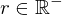
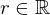
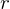

Show the Proof¶
In [1]:
import proveit
# Automation is not needed when only showing a stored proof:
proveit.defaults.automation = False # This will speed things up.
proveit.defaults.inline_pngs = False # Makes files smaller.
%show_proof
Out[1]:
| step type | requirements | statement | ||
|---|---|---|---|---|
| 0 | instantiation | 1, 2, 3 |  ⊢ | |
 : , : ,  : :  , ,  : :  | ||||
| 1 | theorem | ⊢  | ||
| proveit.logic.sets.inclusion.superset_membership_from_proper_subset | ||||
| 2 | theorem | ⊢ | ||
| proveit.numbers.number_sets.real_numbers.real_neg_within_real | ||||
| 3 | assumption | ⊢ | ||